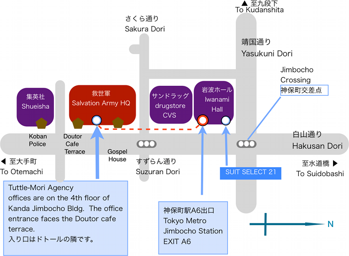

地図
プリントアウト用のA4サイズのPDF地図をダウンロードする場合はここをクリックしてください(365KB PDF)

タトル・モリ エイジェンシー 所在地地図
東京メトロ半蔵門線「神保町駅（Z-07）」A6出口より徒歩１分都営新宿線「神保町駅（S-06）」A6出口より徒歩1分
都営三田線「神保町駅（I-10）」A6出口より徒歩1分
住所 千代田区神田神保町2丁目１７番 神田神保町ビル ４階
＊神保町駅Ａ６出口（岩波ホール口）を出て右折、「スーパーストア冨士屋」先の神田神町ビル（通称 救世軍ビル）です。 オフィス・フロアへのアクセスはゴスペルハウス横 ではなくドトールコーヒー横のビル入口となりますのでご注意ください。